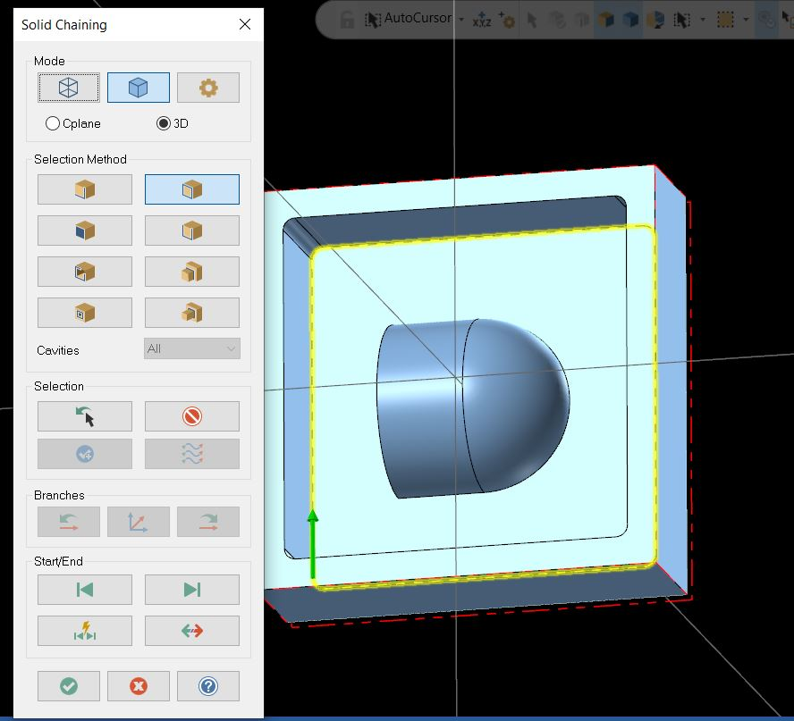
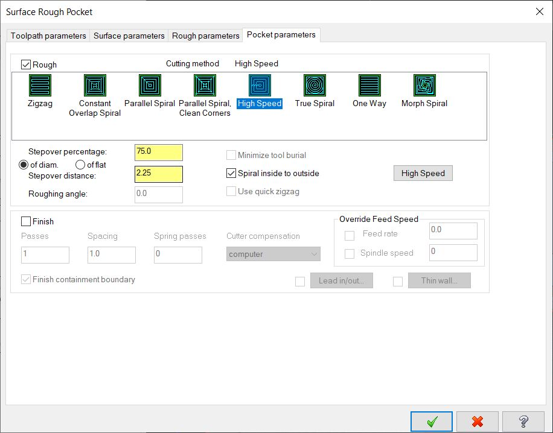
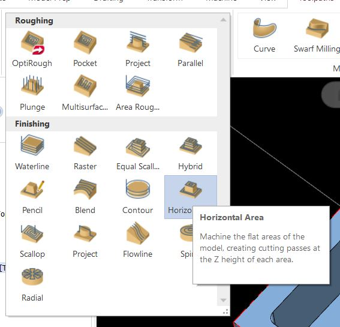
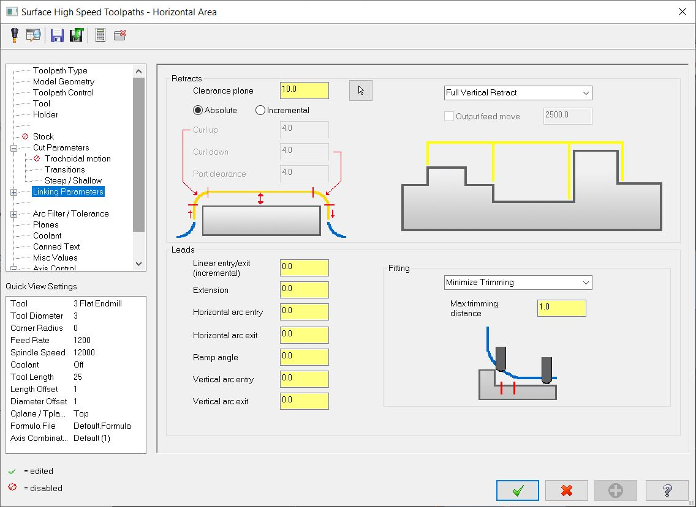
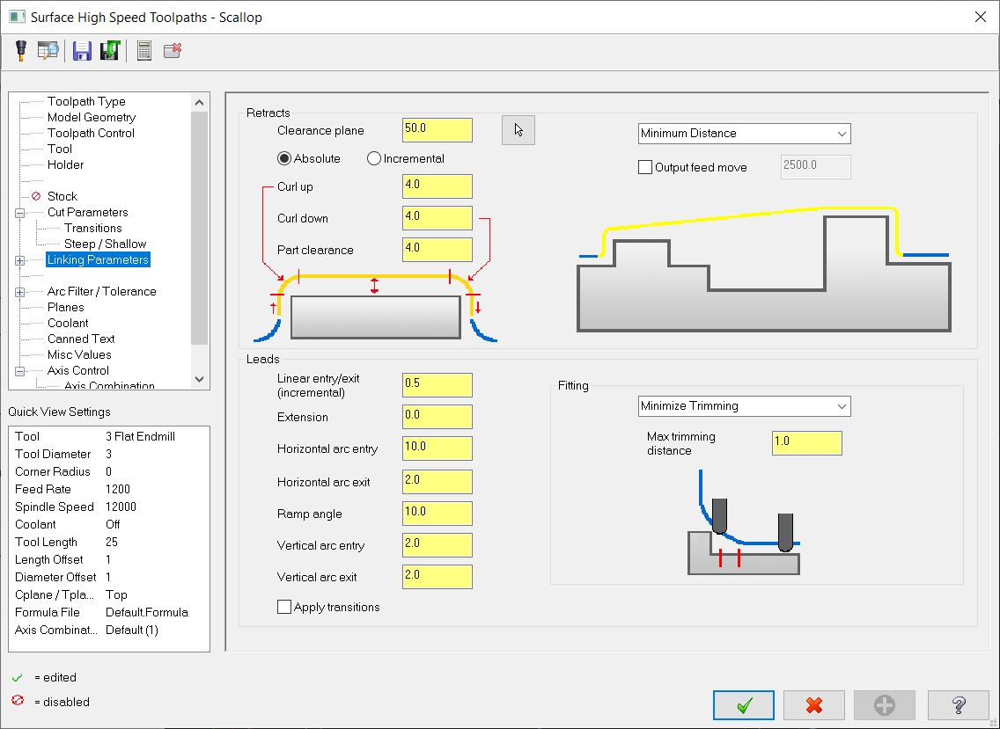
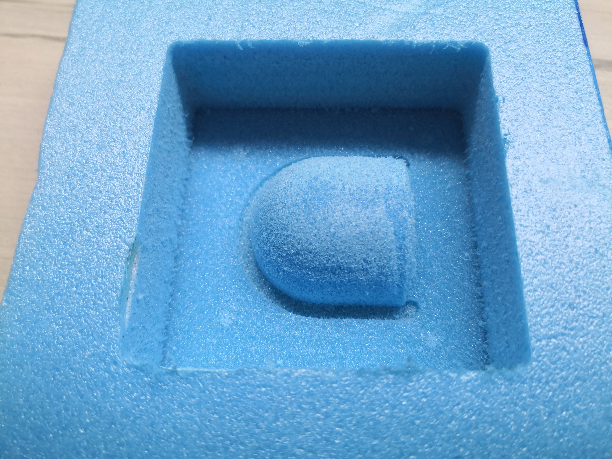
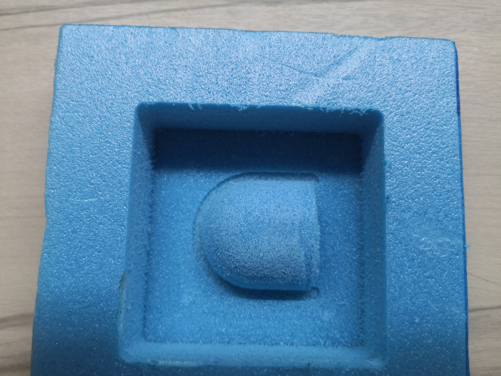

3D CNC
3D machining can create complex parts with curved geometry.
CAD design
This is what the final CAD design will look like.
A quarter of a circle is sketched this will be part of the final casting.

The bounding box to hold the silicone is sketched.
The bounding box is extruded.

The bottom of the box is extruded.
The quarter circle is half revolved to form a quarter sphere.
The corners of the box are filleted because the endmill cannot cut sharp corners.
The semicircle is extruded to form half a cylinder.
This is the final result.
Download 3D filesCAM programming
The step file is merged.
A new machine group for CNC milling is created.
The stock is set up with the dimensions of the stock.
The 3D pocketing operation is selected.
The features to machine to are selected.
The a containment boundary is added.
The outer boundary is selected. The endmill will be constrained within this boundary when under the clearance height.
A new tool needs to be created.
Flat endmill is selected.
The endmill properties are defined.
Cut parameters such as feedrate are defined.
The new tool has been created successfully.
Rough pocketing clearance and stock to leave are defined here.
The stepdown height is set here.
The pocketing method and stepover are defined here.
This is the toolpath generated.
There is 1mm of stock left in the Z axis.

Horizontal area finishing is used to cut the bottom.
The machining geometry is selected.
The bottom flat surface is selected.
Cutter compensation is set to inside the profile.
A containment boundary is defined so that only the flat area is machined.
Number of depth cuts is set to 1 and stepover is set.
Entry is set to a steep ramp.
Clearances are set.
This is the toolpath.
This toolpath cuts to the bottom surface.
This video shows the pocket roughing and bottom finishing./p>
A stock model is created to better visualize the stock remaining.
This is the menu for creating a stock model.
The stock dimensions are loaded with stock setup.
The source operations are selected, all previous operations are selected.
The created stock model shows that only the curved surfaces needs to be cut.
Scallop is used to cut the curved surface.
The machining geometry is selected.
The curved surfaces are selected.
Stepover is set to 0.1mm.
Clearances are set.
This is the toolpath.
The toolpath cuts to the bottom and removes the remaining material.
This is the back plotted scallop operation.
This is the simulator.
It can be seen that it cuts as expected.
This is the toolpath of all operations.
Download EMCAM file Download gcode fileMilling attempt 1
This is Mr Steven's demo milling of the rigid foam.

The foam block is stuck on to the waste board with double sided tape.

The workpiece zero point is set at the top and centre of the material.

The milling has started.

The rough pocketing is underway.

The toolpath is shown on the CNC software.

This is a video of the milling process.
cEnd result
This is the end result.
The surface finish is rough because of the material used.
The curved surface gets lower as the cut goes on.
The cut drifts lower as the cut goes on.
The cut drifting could be because the Z axis skipped steps or the endmill loosening over the cut. It is more probable that the endmill was loosening because lost steps will usually appear as a large step instead of a gradual decline. More of the endmill can be clamped to prevent this, using a longer endmill that can be clamped further will also prevent this.
Milling attempt 2
This is the second attempt of milling. I made sure that the collect nut was tight and started the cut.

Most of the foam will be roughed out

The rough cut continues.

Video of roughing being done.
This is the scalloping finishing operation.
Half way into the finishing cut.

The scallop operation moves all three axis of the CNC to create a smooth surface.
The milling is done!